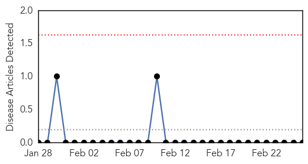
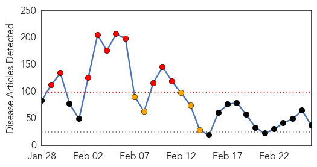
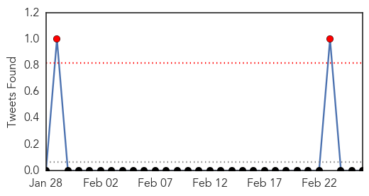

Hemmorhagic Fever
30-Day Web Trend
0 alerts, 0 warnings

30-Day Twitter Trend
0 alerts, 0 warnings

Article Locations

Article Confidences

Top Articles:
-
No articles found for Feb 26, 2015
Top Tweets:
-
No tweets found for Feb 26, 2015
Measles
30-Day Web Trend
10 alerts, 5 warnings

30-Day Twitter Trend
5 alerts, 0 warnings

Article Locations

Article Confidences

Top Articles:
- 0.998
- California Reports No New Measles Cases Since Last Update
- 0.988
- Measles expert explains vaccine safety, virus risks
- 0.985
- Doctors worry measles outbreak will reach Connecticut
- 0.976
- Doctors Express directors weigh in on measles vaccine
- 0.976
- WHO calls for vaccinations against European measles epidemic
- 0.968
- Officials: Measles outbreak in state is over, cost $115,000 to manage
- 0.962
- Measles Resurfaces in Europe – WHO Calls for Widespread Vaccination
- 0.954
- Herd immunity and the vaccine personal belief exemption
- 0.952
- Why One Family With Measles Is Reconsidering Their Anti-Vax Position
- 0.952
- UN health agency taken aback as measles resurfaces in Europe calls for widespread vaccination
- 0.951
- UN health agency 'taken aback' as measles resurfaces in Europe, calls for widespread vaccination
- 0.947
- WHO calls for more measles vaccination in Europe
- 0.932
- Is measles' return the 'new normal'? - WLTZ 38
- 0.916
- Kazakhstan Suspends Measles Vaccination Campaign After Many Students Fall Ill
- 0.909
- Leave well enough alone
- 0.900
- Disneyland Measles Outbreak Slows as Vaccine Bill Gains Steam
- 0.898
- Parents who don’t immunize their children
- 0.884
- WHO Alarmed Over Big Measles Outbreak, Seeks More Vaccination in Europe
- 0.881
- Kazakhstan Suspends Measles Vaccination Campaign After Many Students Fall Ill
- 0.873
- Visitors to Long Grove Menards may have been exposed to measles
- 0.868
- Up to 1,500 BART riders possibly exposed to measles by infected passenger
- 0.841
- Dana Hills High School
- 0.797
- Another reason to get your measles vaccine
- 0.784
- How the success of vaccines gave rise to anti-vaxxers
- 0.784
- Europe urged to step up vaccinations against measles
- 0.748
- Measles outbreak in Germany continues to spread
- 0.732
- Potential Measles Exposures Flare Up In Palatine Laundromat...
- 0.730
- In Perspective: Measles 2015
- 0.725
- WHO calls for more efforts to fight measles
- 0.708
- 70% Un-vaccinated children at Risk for Measles
- 0.686
- I-Team: Many Private Schools Are Vulnerable to Measles
- 0.681
- Untitled Article
- 0.597
- UN Health Agency Urges Europe to Step up Measles Vaccination
- 0.567
- Letters: Measles vaccine saves lives- Letters to the Editor: Orange County Register
- 0.563
- WHO Urges Europe, Central Asia To Step Up Measles Vaccination
- 0.526
- Mom: We weren't 'willy-nilly exposing people' to measles
- 0.524
- Kearny mom speaks out about measles
Top Tweets:
-
No tweets found for Feb 26, 2015